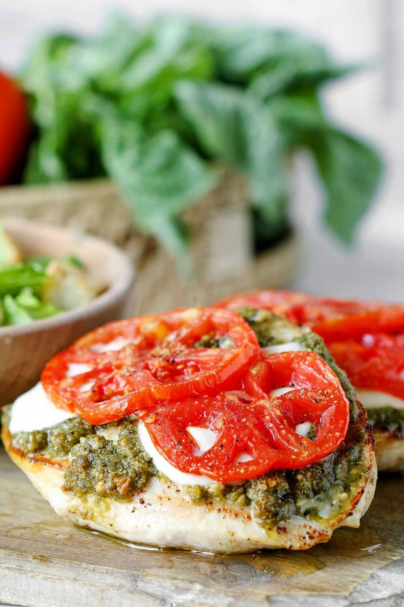

Pesto Baked Chicken

Description
This incredibly easy recipe can be cooked by anyone!
This four ingredient, weeknight recipe takes 5 minutes to prepare.
With the pop of these Italian ingredients, it'll impress anybody.
Ingredients
- Three chicken breasts
- Basil-pesto
- Tomatoes
- Mozzarella
Instructions
- (Optional) Pan sear the chicken until golden. This will give the chicken a nice
caramelized taste and it will bake much faster.
- Slather a generous layer of basil-pesto on top of the chicken (raw or seared).
- Place a couple mozzarella slices on top of the basil pesto.
- Finish topping the chicken with thinly sliced tomatoes.
- Bake the prepared chicken at 350 degrees until cooked through.
- Serve!
Recommended Side Dishes
- Fries
- Rice
- Steamed or baked veggies
- Baked potatoes